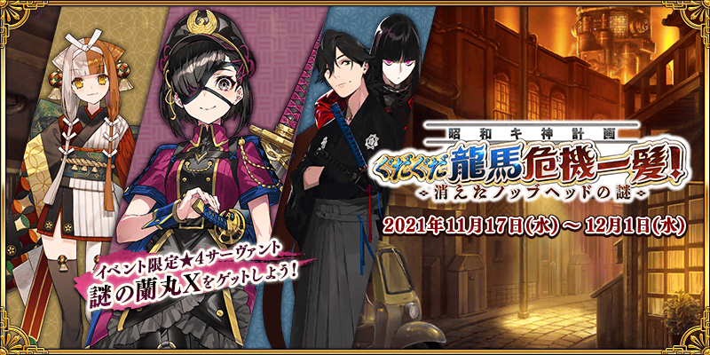
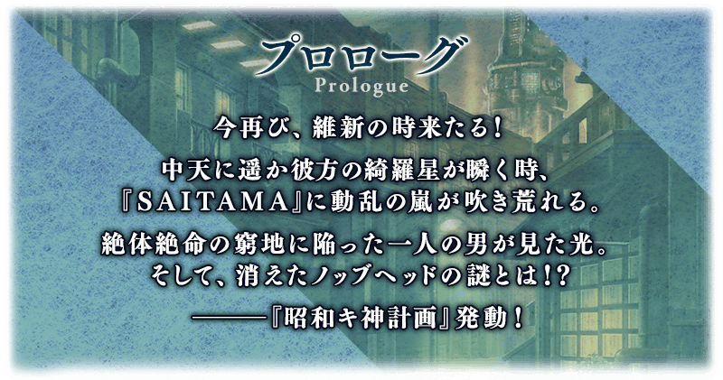 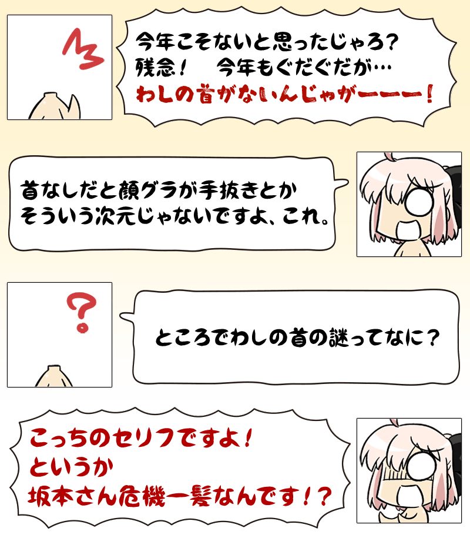
舉辦期間限定活動「昭和Ｇ神計畫 GUDAGUDA龍馬千鈞一髪！ 消失的信信Head之謎」！
GUDAGUDA一行人為了尋找突然消失信信頭顱而來到特異點。
但是，應該一起靈子轉移的從者卻不見蹤影！
變成孤身一人的御主，能否順利回收無事信信的頭顱呢・・・？
本活動中進行主線關卡的話，活動限定從者「★4(SR)謎之蘭丸X」將以期間限定暫時加入。 推進主線關卡，讓「★4(SR)謎之蘭丸X」正式加入吧！
本活動中，除了享受故事的主線關卡逐日開放外，在通過主線關卡第壹話後會開放「偵探任務」。
「偵探任務」是處理不斷而來的委託，可獲得各式各樣報酬的迷你任務。在活動期間中沒有限制委託的總數，反覆處理委託可得到更多的報酬。
※本頁面皆為開發中圖片。會有與實際圖片相異的情況。 ※一部份的關卡為日後開放。
◆活動舉辦期間◆
2021年11月17日(三) 19:00～12月1日(三) 11:59
◆活動參加條件◆
滿足以下條件的御主才能參加
・通過第2部 第5.5章「地獄界曼荼羅 平安京 轟雷一閃」
※不需要通過亞種特異點(從Ⅰ到Ⅳ)。
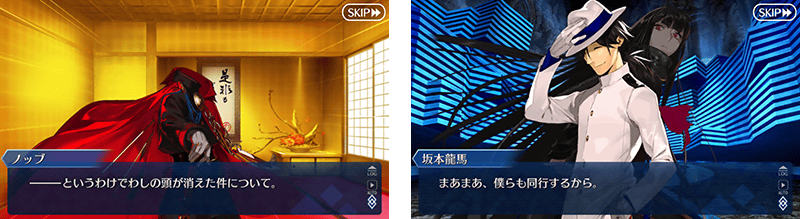

由於在「Fate/Grand Order 迦勒底放送局 輕量版 ～GUDAGUDA龍馬千鈞一髪！～」內達成5萬轉推，實施放送記念登入獎勵！ 在下述期間中登入的話，贈送聖晶石12個。
◆領取期間◆
2021年11月18日(四) 3:00～11月25日(四) 2:59
上述期間中，在初次登入「Fate/Grand Order」的時間點，贈予至禮物箱。
※期間內未登入的話無法領取。
※禮物只能領取1次。
◆贈送內容◆
聖晶石12個
◆贈送對象◆
2021年11月18日(四) 2:59前通過「特異點F 炎上汙染都市 冬木」的御主對象
※上述時間前，在管理室(ターミナル)畫面的關卡看板必須要有「CLEAR」的文字顯示。
【11月22日(一) 17:00更新】
在「Fate/Grand Order」官方網站內首頁及Gallery，公開了期間限定活動「昭和Ｇ神計畫 GUDAGUDA龍馬千鈞一髪！ 消失的信信Head之謎」的電視廣告『「昭和Ｇ神計畫 GUDAGUDA龍馬千鈞一髪！ 消失的信信Head之謎」告知廣告 Web ver.(坂本龍馬旁白)』。敬請確認。
※於官方網站內首頁公開的『「昭和Ｇ神計畫 GUDAGUDA龍馬千鈞一髪！ 消失的信信Head之謎」告知CM Web ver.』，請在官方網站內的Gallery確認。
【「昭和Ｇ神計畫 GUDAGUDA龍馬千鈞一髪！ 消失的信信Head之謎」告知CM Web ver.(坂本龍馬旁白)】
【「昭和Ｇ神計畫 GUDAGUDA龍馬千鈞一髪！ 消失的信信Head之謎」告知CM Web ver.】
動畫製作：A-1 Pictures
※11月24日(三) 17:00 圖片更新 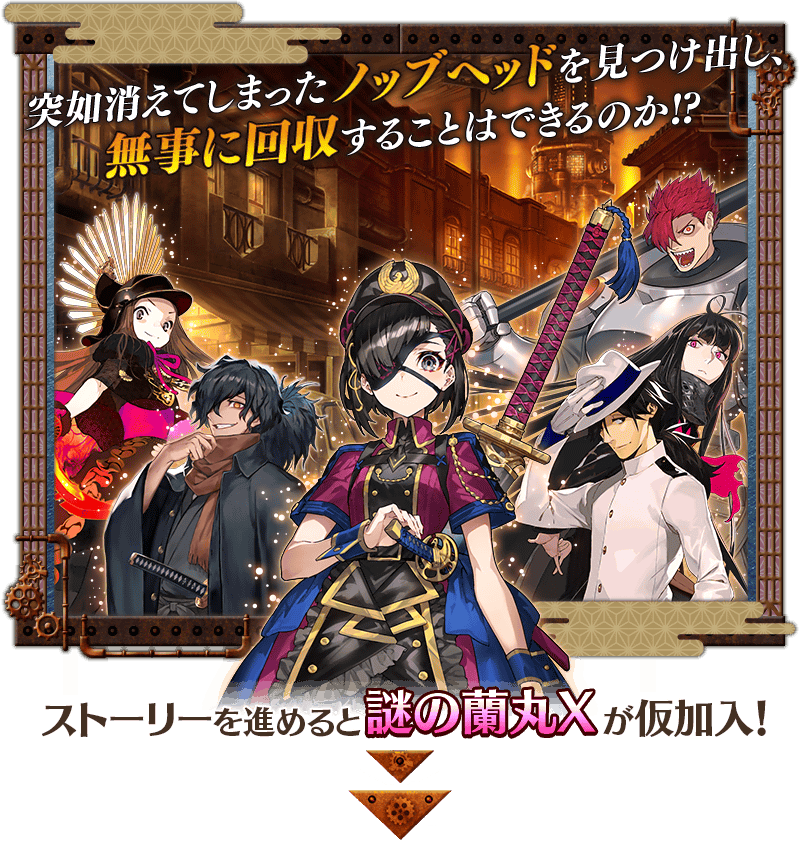 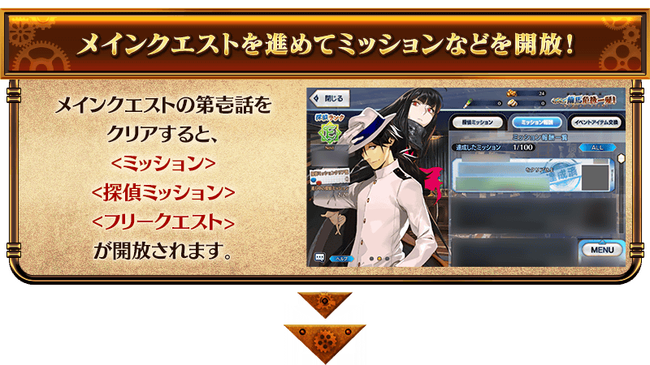 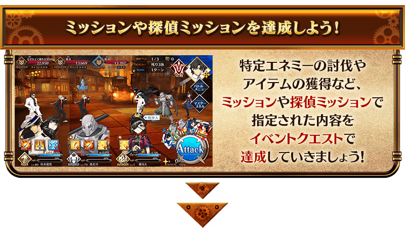 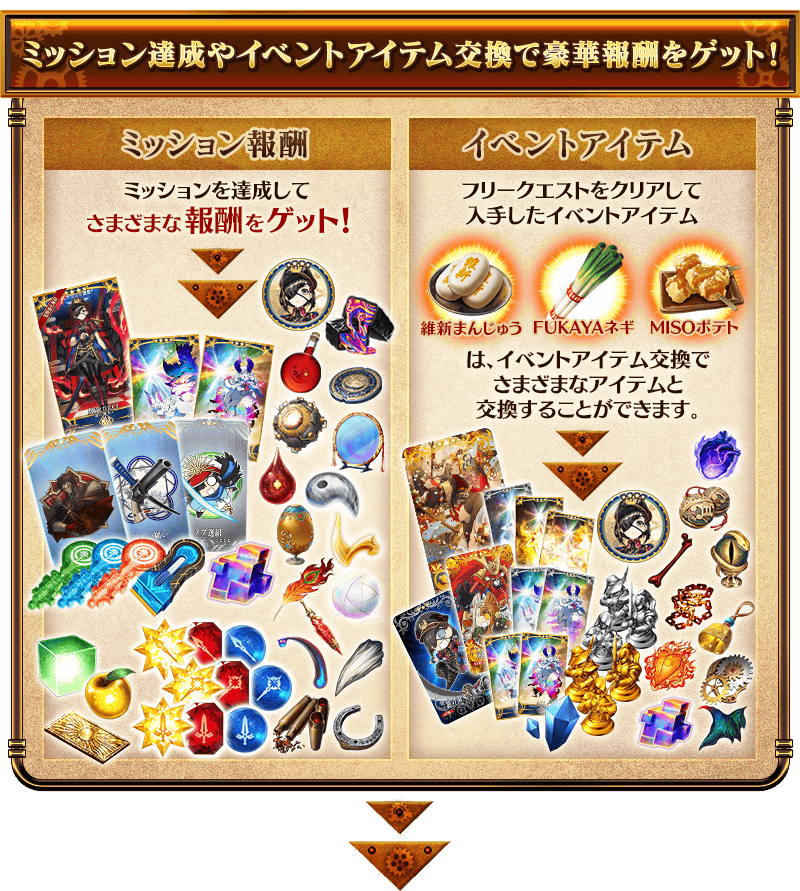 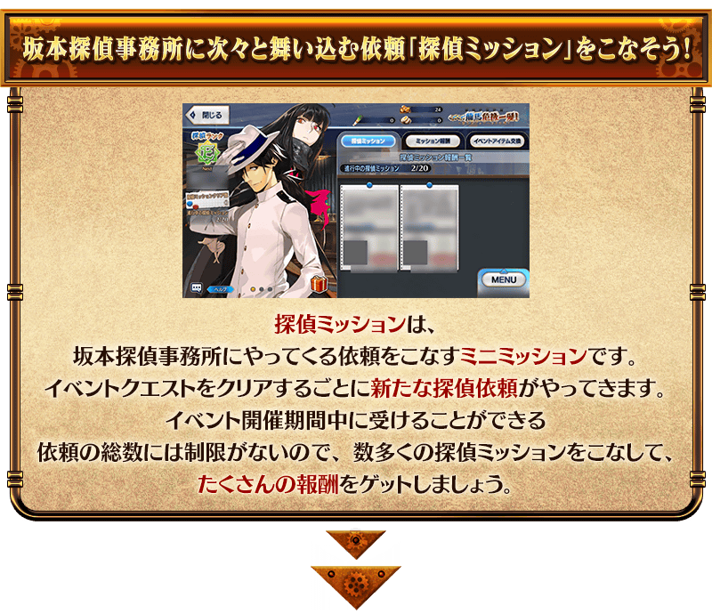 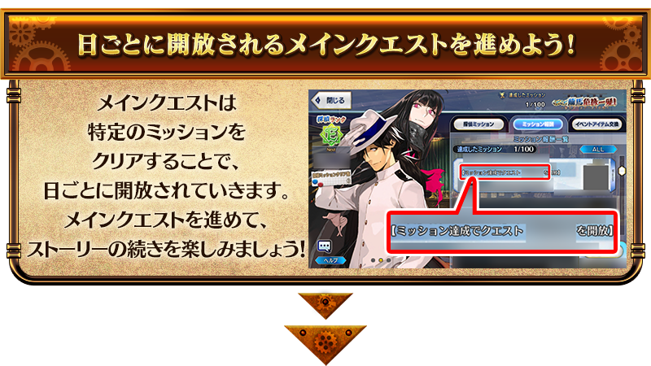
享受劇情的主線關卡，達成特定任務的話將逐日開放。 推進主線關卡的話，活動限定從者「★4(SR)謎之蘭丸X」將正式加入。 並且，推進主線關卡的話，會追加新自由關卡和提升偵探任務的難易度與報酬階級。
【關卡的舉辦期間】
| 關卡的種類 | 舉辦期間 |
|---|---|
|
序幕(プロローグ) 主線關卡第壹話 自由關卡 |
2021年11月17日(三) 19:00～ 12月1日(三) 11:59 |
|
主線關卡第貳話～第參話 自由關卡 |
2021年11月18日(四) 17:00～ 12月1日(三) 11:59 |
|
主線關卡第肆話～第伍話 自由關卡 |
2021年11月19日(五) 17:00～ 12月1日(三) 11:59 |
|
主線關卡第陸話～第漆話 自由關卡 |
2021年11月20日(六) 17:00～ 12月1日(三) 11:59 |
|
主線關卡第捌話～第玖話 自由關卡 |
2021年11月21日(日) 17:00～ 12月1日(三) 11:59 |
|
主線關卡第拾話～最終話 自由關卡 |
2021年11月22日(一) 17:00～ 12月1日(三) 11:59 |
| 主線關卡余談 |
謎之蘭丸X正式加入
2021年11月23日(二) 17:00～
12月1日(三) 11:59 |
期間限定活動「昭和Ｇ神計畫 GUDAGUDA龍馬千鈞一髪！ 消失的信信Head之謎」中，會發生達成「收集特定的道具一定數以上」「擊倒特定的敵人」等各式各樣條件的話，可獲得豪華報酬的任務！
另外，對應任務的達成狀況會開放新的任務和主線關卡。
通過任務，邊獲得達成報酬邊推進主線關卡吧！
※請注意光滿足通過條件無法入手報酬。 ※請注意未領取任務報酬的話，不會開放新的任務。
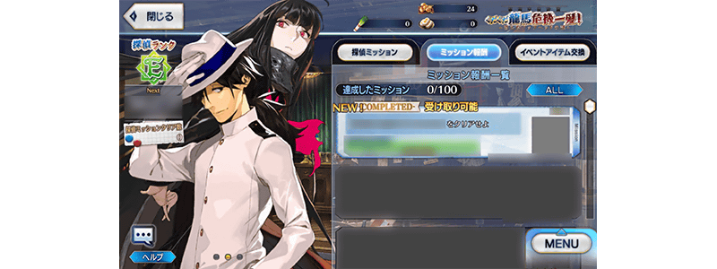 ※11月24日(三) 17:00 圖片更新
『偵探任務』是在坂本偵探事務所處理委託的迷你任務。
在活動舉辦期間中可領取的委託總數沒有限制，反覆通過可獲得更多的報酬。
另外，達成一定數的偵探任務，推進主線關卡讓「偵探Rank」上升，委託的內容和報酬會變化。
不斷地處理飛進坂本偵探事務所的委託，得到更多的報酬吧！
※偵探任務的報酬在任務達成時會自動領取。
※達成的偵探任務會自動從委託清單刪除。
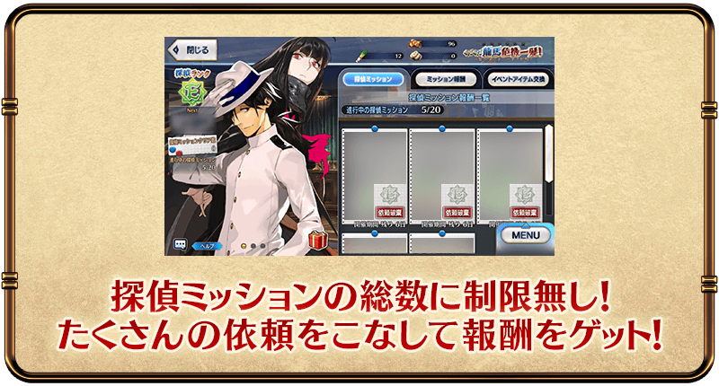
在每次通過活動關卡時，會隨機追加配合偵探Rank的委託內容。委託最多可同時收到20件。
新追加的委託進行度，是從委託追加的階段開始計算。
※追加的委託內容，可能會有從比現在的偵探Rank還低的Rank選出。
由於偵探任務的委託可任意放棄，感覺不好達成的情況就先拒絕委託再等待新委託的追加吧。
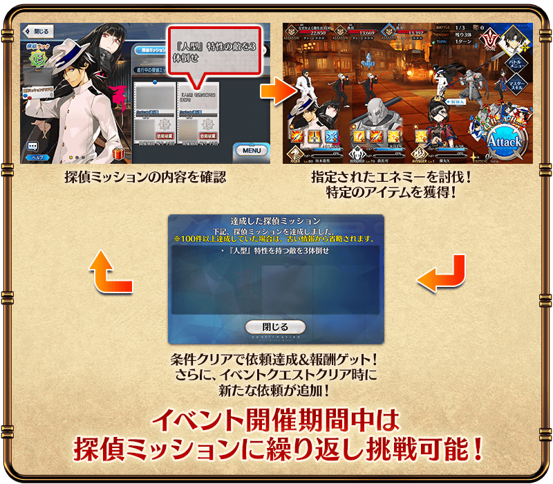 ※11月24日(三) 17:00 圖片更新
【11月24日(三) 17:00追記】
以通過期間限定活動「昭和Ｇ神計畫 GUDAGUDA龍馬千鈞一髪！ 消失的信信Head之謎」所有主線關卡與特定任務的御主做為對象，開放高難易度的「挑戰關卡」。
「挑戰關卡」就算通過後也不會消失，可以變更從者和概念禮裝的組合等後無限次挑戰。
※關卡通過報酬、戰利品、御主EXP、魔術禮裝EXP、絆點數只可在初次通過時獲得。
◆挑戰關卡開放時間◆
2021年11月24日(三) 17:00～
◆挑戰關卡參加條件◆
滿足以下條件的御主才能參加
・通過期間限定活動「昭和Ｇ神計畫 GUDAGUDA龍馬千鈞一髪！ 消失的信信Head之謎」的所有主線關卡與特定任務
◆挑戰關卡初次通過報酬◆
傳承結晶 1個
超值攻略方法・其1
本活動的期間中，強化「★4(SR)謎之蘭丸X」時的獲得經驗值變成2倍。
是讓成為活動加成對象的「★4(SR)謎之蘭丸X」等級一口氣上升的機會！
◆舉辦期間◆
2021年11月17日(三) 19:00～12月1日(三) 11:59
超值攻略方法・其2
本活動的期間中，下表的從者在活動關卡中會得到「自身的攻擊威力提升」與「絆點數獲得量提升」的加成！
強化對象從者，挑戰活動吧！
※活動加成的效果量因從者而異。 ※瑪修・基利艾拉特的「絆點數獲得量提升」效果，是所謂「我方全體含候補的絆點數獲得量提升」的效果。支援時此效果無效。
【活動加成的效果與對象從者】
| 自身的 攻擊的 威力 |
絆 點數 獲得量 |
職階 | 稀有度 | 從者名 |
|---|---|---|---|---|
| ＋100％ |
只限自身 ＋50% |
Lancer | ★★★★★ | 坂本龍馬 |
| Caster | ★★★★★ | 出雲阿國 | ||
| Avenger | ★★★★ | 謎之蘭丸X | ||
| ＋50％ |
只限自身 ＋20% |
Rider | ★★★★ | 坂本龍馬 |
| Assassin | ★★★ | 岡田以藏 | ||
| Berserker | ★★★★ | 茶茶 | ||
| ★★★ | 森長可 | |||
| Avenger | ★★★★★ | 魔王信長(織田信長) | ||
| ＋30％ |
只限自身 ＋20% |
Saber | ★★★★★ | 沖田總司 |
| ★★★★★ | 沖田總司〔Alter〕 | |||
| ★★★★ | 齋藤一 | |||
| Archer | ★★★★ | 織田信長 | ||
| ★ | 織田信勝 | |||
| Lancer | ★★★★ | 長尾景虎 | ||
| Rider | ★★★ | 美杜莎 | ||
| Assassin | ★★★★★ | 李書文 | ||
| ★★★★ | 沖田・J・總司 | |||
| Berserker | ★★★★★ | 土方歲三 | ||
| ★★★★ | 織田信長 | |||
| Ruler | ★★★★★ | 卑彌呼 | ||
| Alterego | ★★★★★ | 沖田總司〔Alter〕 | ||
|
我方全體 ＋5% |
Shielder | ★★★ | 瑪修・基利艾拉特 |
※11月22日(一) 17:00更新 ※就算成為對象從者也會有未在本活動的主線劇本登場的情況。 ※「★5(SSR)魔王信長(織田信長)」是「★5(SSR)織田信長」靈基再臨第3階段後名稱會變成「★5(SSR)魔王信長」。 ※自11月12日(五) 17:00，在從者選擇畫面和從者強化畫面等，追加活動加成篩選器。由於是只顯示於活動活躍從者的便利功能，敬請活用。
超值攻略方法・其3
裝備活動限定概念禮裝與期間限定概念禮裝的話，在活動中會受到各式各樣的恩惠。
裝備可靠活動道具交換入手的活動限定概念禮裝「★5(SSR)花と舞う妓」的話，在期間限定活動「昭和Ｇ神計畫 GUDAGUDA龍馬千鈞一髪！ 消失的信信Head之謎」中自身的攻擊威力會提升。
另外，裝備在聖晶石召喚Pick Up的期間限定概念禮裝「★5(SSR)失意燃ゆる」「★4(SR)愛・乱麻」「★3(R)その瞳は逃がさない」的話，活動道具「維新饅頭」「FUKAYA大蔥」「MISO馬鈴薯」各自的掉落獲得數會提升。
※請注意各關卡的道具掉落率並非100％。
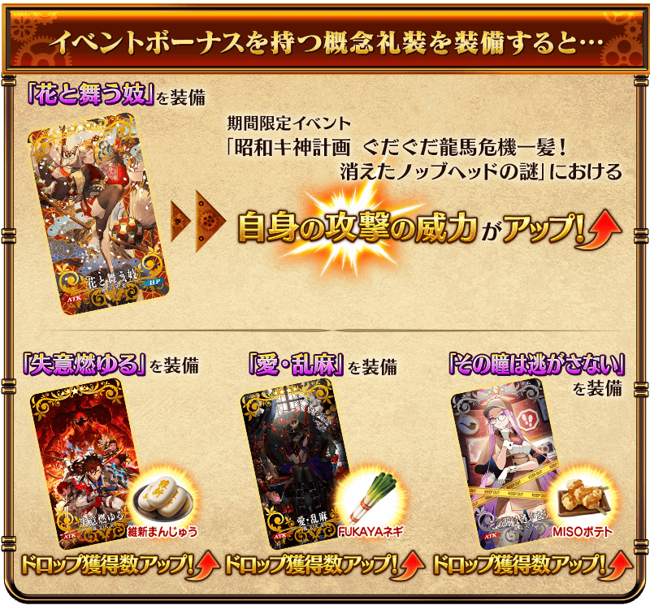
| 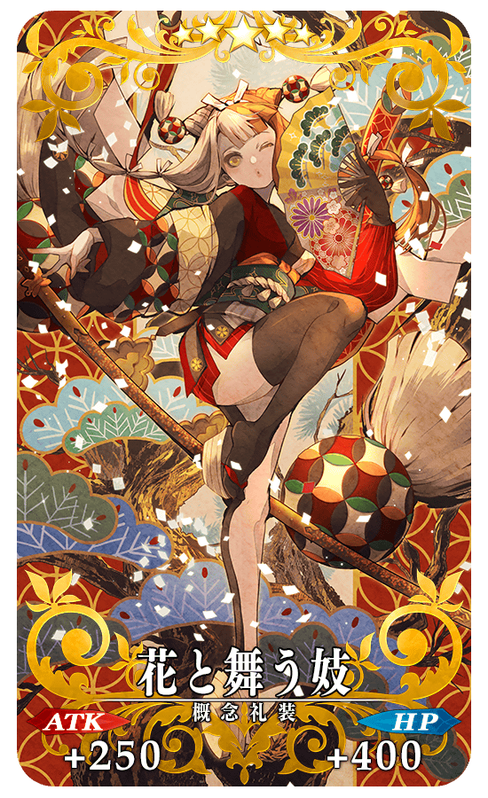 |
★★★★★SSR |
拿到活動限定概念禮裝EXP卡「阿国座カルデア公演」「謎の蘭丸X飛来！」吧！
做為期間限定活動「昭和Ｇ神計畫 GUDAGUDA龍馬千鈞一髪！ 消失的信信Head之謎」的活動限定報酬，可大幅強化概念禮裝的EXP卡登場！
|
【活動限定】 |
| 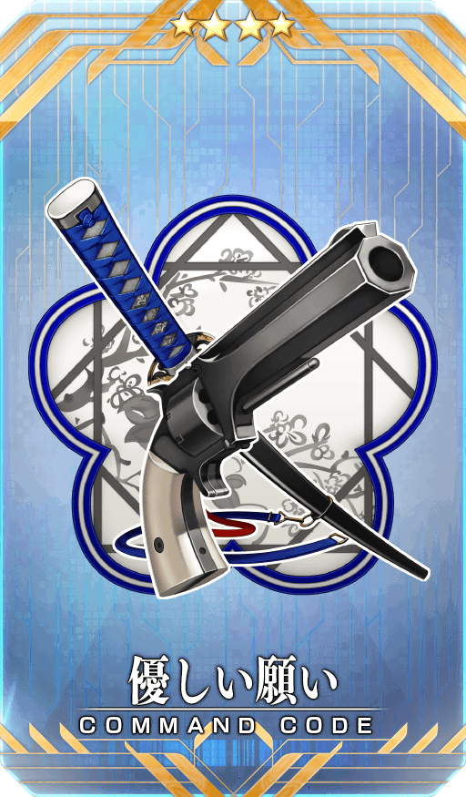 |
★★★★SR |
|
★★★R |
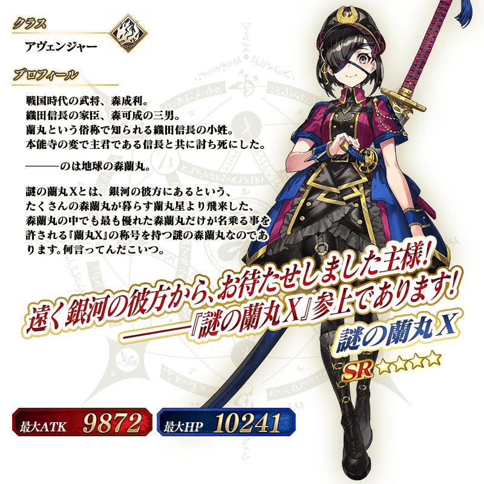
◆靈基再臨◆
使用能靠任務報酬入手的「謎之物質RX」，重複4次靈基再臨的話，卡面會有所變化！
※「★4(SR)謎之蘭丸X」不會隨靈基再臨使戰鬥角色的外觀變化。
◆關於「★4(SR)謎之蘭丸X」的從者硬幣◆
「★4(SR)謎之蘭丸X」的從者硬幣在本活動中可在任務報酬、活動道具交換入手。
各自可入手最多下述的枚數。
・任務報酬:最多120枚 ・活動道具交換:最多360枚
介紹「★4(SR)謎之蘭丸X」的寶具演出！
「★4(SR)謎之蘭丸X」的寶具演出於一部份裝置有對應全螢幕顯示。
活動道具可自點擊管理室(ターミナル)畫面右上「活動報酬」鍵所顯示的「活動道具交換」畫面，交換以下的道具。 ※關於傳承結晶、英靈結晶・流星之芙芙ALL★4(HP)、英靈結晶・日輪之芙芙ALL★4(ATK)、「★4(SR)謎之蘭丸X」的從者硬幣，進行日後開放的本活動後才能交換。
◆交換期間◆
2021年11月17日(三) 19:00～12月8日(三) 11:59
※活動道具交換期間結束後「維新饅頭」「FUKAYA大蔥」「MISO馬鈴薯」會消失。
◆能用維新饅頭交換的道具◆
|
【活動限定概念禮裝】 【靈衣開放權】 【從者硬幣】 【技能強化＆靈基再臨素材】 【靈基再臨素材】 【其他道具】 |
◆能用FUKAYA大蔥交換的道具◆
|
【活動限定概念禮裝】 【從者硬幣】 【技能強化＆靈基再臨素材】 【靈基再臨素材】 【其他道具】 |
◆能用MISO馬鈴薯交換的道具◆
|
【活動限定概念禮裝】 【從者硬幣】 【技能強化＆靈基再臨素材】 【其他道具】 |
「★3(R)岡田以藏」的靈衣開放權做為期間限定活動「昭和Ｇ神計畫 GUDAGUDA龍馬千鈞一髪！ 消失的信信Head之謎」的報酬登場！
本活動中，在通過特定主線關卡後可靠活動道具交換入手上述靈衣開放權。
另外，想開放靈衣的話，除了靈衣開放權外再加上必須滿足一些開放條件。
◆有關靈衣開放權的注意◆
※「★3(R)岡田以藏」的靈衣開放權只限期間限定活動「昭和Ｇ神計畫 GUDAGUDA龍馬千鈞一髪！ 消失的信信Head之謎」的活動道具交換期間才能入手。
※「★3(R)岡田以藏」的靈衣會配合外觀變化一部份語音。
※請注意未持有「★3(R)岡田以藏」的情況，可入手靈衣開放權。但無法進行靈衣開放。

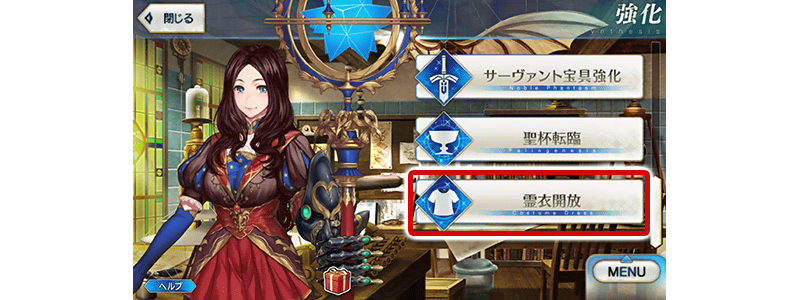
「靈衣開放」是自強化畫面進行。
※「靈衣開放」後會自動切換戰鬥角色和圖示。若想回到「靈衣開放」前的狀態和變成其他再臨階段的情況，可自從者詳細畫面變更。 ※進行「靈衣開放」不會讓職階和能力等有所變化。
介紹靈衣開放「えろうイケちょるスーツ」的「★3(R)岡田以藏」寶具演出！
「★3(R)岡田以藏」的寶具演出於一部份裝置有對應全螢幕顯示。
【11月22日(一) 17:00追記】
強化「★5(SSR)魔王信長(織田信長)」的特別關卡「從者強化關卡」，在迦勒底之門永久追加。
不僅進行對象從者的強化，也可獲得聖晶石做為關卡通過報酬。
※請注意在從者強化關卡沒有文字冒險部份。
◆追加時間◆
2021年11月22日(一) 17:00～
◆開放條件◆
持有的強化對象從者，必須使其最終再臨。
※未持有對象從者的話，不會出現關卡。
※關卡沒有舉辦期限。
期間限定活動中進行討伐指定敵人的任務中情況，修改成會在出現討伐對象敵人的關卡看板上顯示對象敵人的圖示。
據此修改，會變得更容易了解進行中任務討伐對象出現的關卡。
※關於未遭遇的敵人會以「？」圖示顯示。
※顯示對象敵人的圖示，只限可確認關卡情報的關卡。
※本功能為活動關卡限定。
◆追加時間◆
2021年11月17日(三) 19:00～
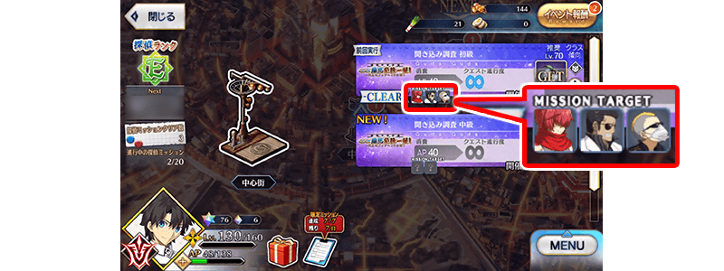 ※11月24日(三) 17:00 圖片更新
【11月22日(一) 17:00追記】
其他還有，
・GUDAGUDA龍馬千鈞一髪！Pick Up召喚
・GUDAGUDA龍馬千鈞一髪！Pick Up2召喚(每日交替)
以期間限定舉辦中！
關於詳情，請自下述橫幅確認。